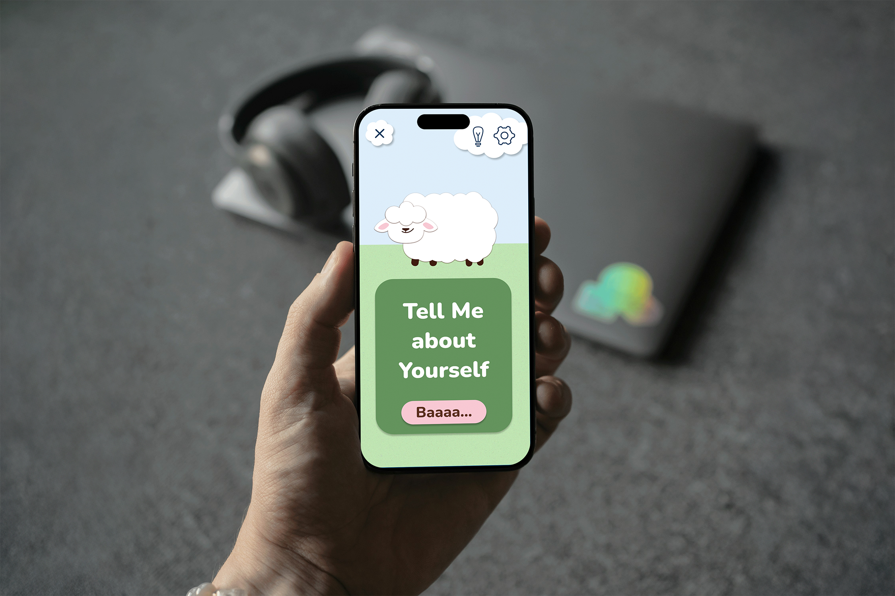
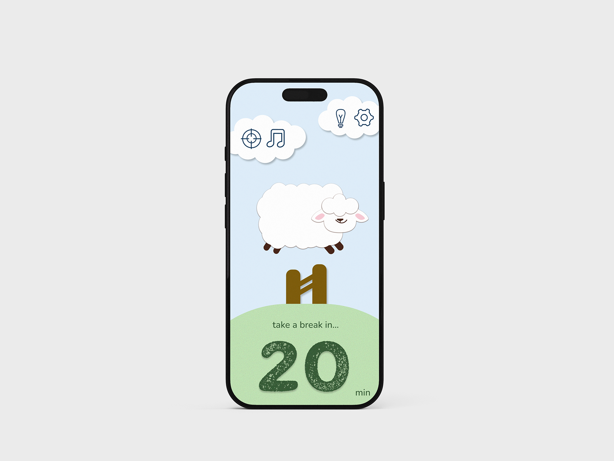
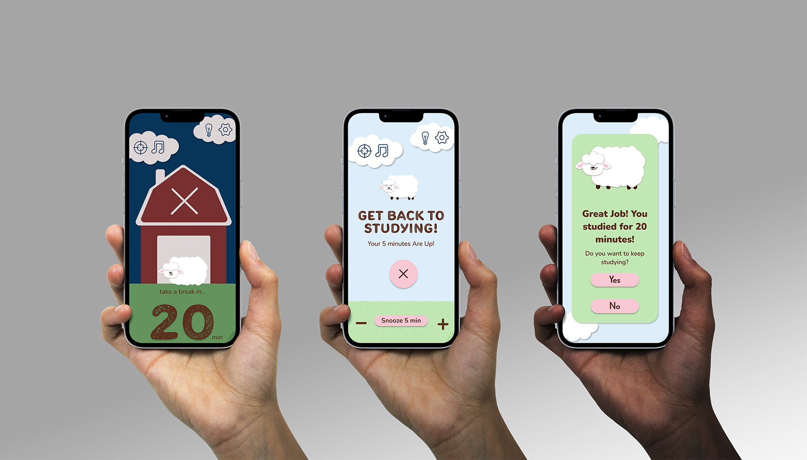
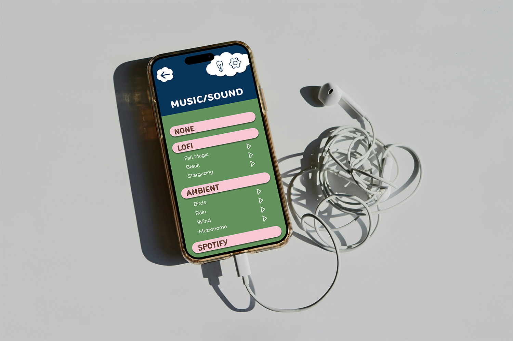

This was a semester-long project that I worked on in my Web Design I class with Professor Mustafa Ozcicek. My partner that I collaborated with was Marayla Cross. The intention of the project was to create an app for mobile devices that helped students in college study by setting timers and also analyzing their environment around them to create the ideal study space. Together, we started this project off with an abundant amount of research that lead to the questions that helped us form our plan for the app. At that point, we were able to move on and start creating user profiles which helped with identifying what we needed to include in our app in order for it to be successful, and competitor analysis so we could make our app stand out from others and see what people liked or disliked about them. After that, we were able to move on to our sketches \, laying out how the interface would be composed, and then on to wireframes, and finally, the polished screens that would be presented at the end of the class, complete with interactions.